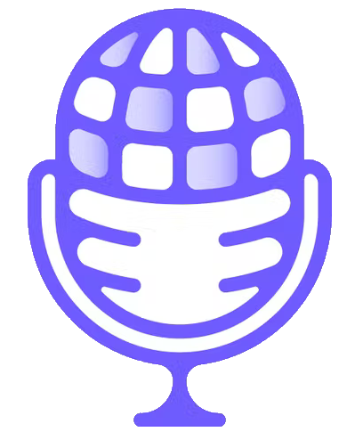

Welcome, test@fest.se
Your Favorited Radio(s): Newstalk ZB Auckland , Polskie Radio Bialystok , Rete Toscana Classica
Log out
Delete user
Favourites
Newstalk ZB Auckland
Polskie Radio Bialystok
Rete Toscana Classica
Add to favorites